Học tăng cường · Bài 10
TRPO, PPO và DPO
Cập nhật chính sách ít dao động và không đi quá xa, cả khi chỉ có so sánh của người.
Trường Đại học Công nghệ, Đại học Quốc gia Hà Nội
Năm học 2026–2027, học kỳ 1
Tiên quyết và quy ước
Nhắc lại: REINFORCE thu một lượt bằng chính sách hiện tại, rồi đi một bước theo
$$\widehat g=\sum_t\gamma^t\,{\color{#6B3FA0}G_t}\,\psi_t.$$Ký hiệu: $\psi_t$ là hàm điểm. Số nhân với hàm điểm ở bước $t$ gọi là hệ số của bước đó. Ở REINFORCE, hệ số là lợi tức $G_t$.
Trung bình của $\widehat g$ trên nhiều lượt bằng $\nabla J$.
Nhắc lại: với hai hành động và tham số $\theta=(\theta_1;\,\theta_2)$, xác suất chọn hành động 1 là $p=\sigma(\theta_1-\theta_2)$, và
$$\psi(s,1)=(1-p)\,(1;\,-1),\qquad\psi(s,2)=-p\,(1;\,-1).$$Ví dụ: hành lang ngắn (1)
Mọi ô: $p=\tfrac12$, thưởng $-1$ mỗi bước, $\gamma=1$. Hành động 1 sang phải, 2 sang trái, trừ ở $s_2$ (đổi chiều) và $s_1$ (2 đứng yên). Tọa độ $\theta_1$: $\psi_t=+\tfrac12$ với hành động 1, $-\tfrac12$ với 2.
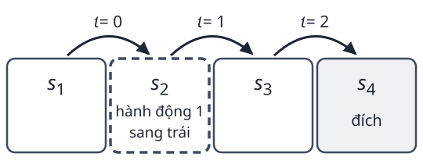
| $t$ | ô | hành động | $G_t$ | $\psi_t$ | $G_t\psi_t$ |
|---|---|---|---|---|---|
| 0 | $s_1$ | 1 | $-3$ | $+\tfrac12$ | $-1{,}5$ |
| 1 | $s_2$ | 2 | $-2$ | $-\tfrac12$ | $+1$ |
| 2 | $s_3$ | 1 | $-1$ | $+\tfrac12$ | $-0{,}5$ |
| tổng $\widehat g_1$ | ${\color{#C62828}\boxed{-1}}$ |
Câu hỏi: Lượt này đẩy $p$ lên hay xuống?
Lời giải: Ba số hạng $-1{,}5$; $+1$; $-0{,}5$ cộng lại bằng $-1$, nên $\theta_1$ và $p$ giảm.
Ba lượt cho ba hướng cập nhật khác nhau
Nhắc lại: $J(p)=-\tfrac{2(2-p)}{p(1-p)}$, tại $p=\tfrac12$ có $J=-12$, $J'=8$. Tọa độ $\theta_1$ của gradient đúng: $J'\cdot p(1-p)=8\cdot\tfrac14=2$.
| Lượt | Hành động | Lợi tức $G_t$ | Phép tính $\widehat g_1$ |
|---|---|---|---|
| (a) | $1,2,1$ | $-3,-2,-1$ | $\tfrac12(-3)-\tfrac12(-2)+\tfrac12(-1)$ |
| (b) | $2,1,2,1$ | $-4,\dots,-1$ | $-\tfrac12(-4)+\tfrac12(-3)-\tfrac12(-2)+\tfrac12(-1)$ |
| (c) | $1,1,1,2,1$ | $-5,\dots,-1$ | $\tfrac12(-5-4-3-1)-\tfrac12(-2)$ |
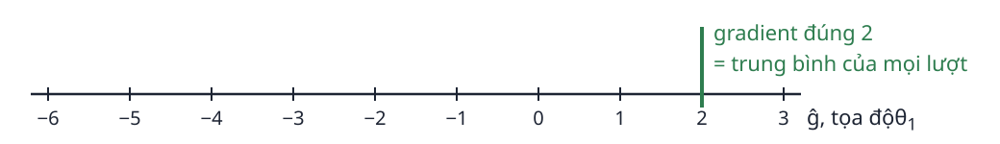
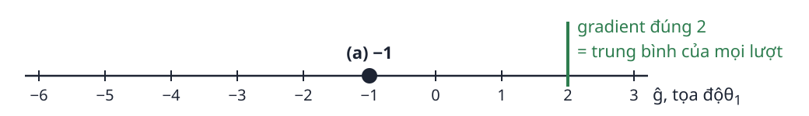
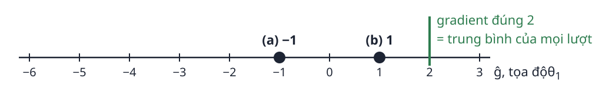
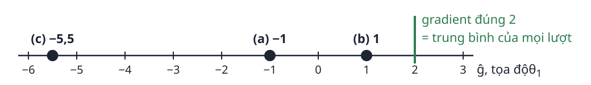
Mỗi lượt lệch xa $2$. Trung bình trên mọi lượt có thể có vẫn bằng $2$.
Bước đúng hướng mà dài làm $J$ giảm
Hai bước theo đúng gradient $(2;-2)$ từ $\theta=(0;0)$, tức $p=\tfrac12$. Đỉnh của $J$ ở $p^*\approx0{,}59$.
$J$ chỉ gần tuyến tính trong một lân cận nhỏ của chính sách cũ.
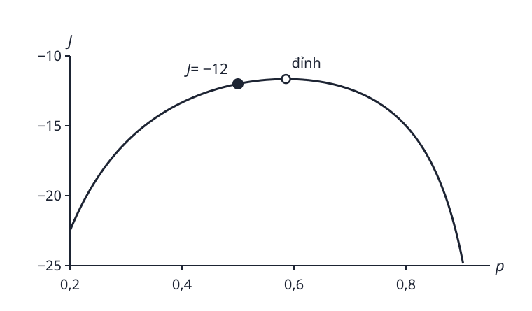
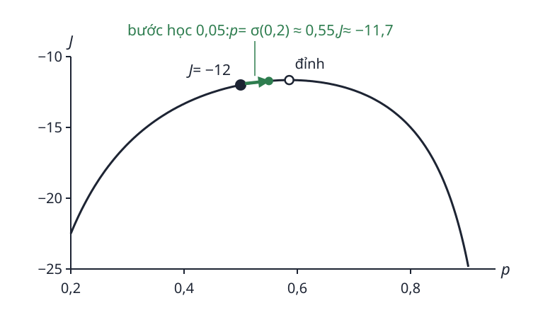
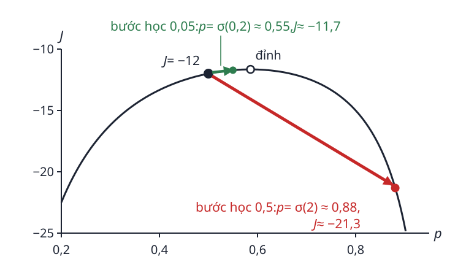
Vấn đề trung tâm
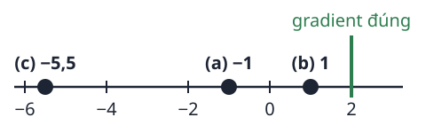
dao động
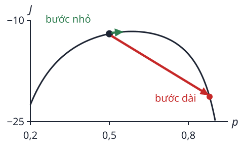
bước dài
Câu hỏi:
1. Làm sao ước lượng gradient ít dao động hơn?
2. Làm sao đi bước lớn mà $J$ không giảm?
Mục tiêu học tập
Sau bài này, sinh viên có thể:
- Giảm dao động của ước lượng gradient mà giữ trung bình.
- Trộn đánh giá một bước với lợi tức cả lượt, rồi tính hệ số trên một lượt.
- Đoán $J$ của chính sách mới từ dữ liệu cũ, và chỉ ra khi nào phép đoán sai.
- Tính chính sách mà phép cắt tỉ số dừng lại trên ví dụ.
- Tìm chính sách tốt nhất từ các lần người so sánh hai câu trả lời.
Nội dung

2.So lợi tức với giá trị của trạng thái
Một nửa số lượt trên chuỗi hai trạng thái đẩy chính sách sai hướng.
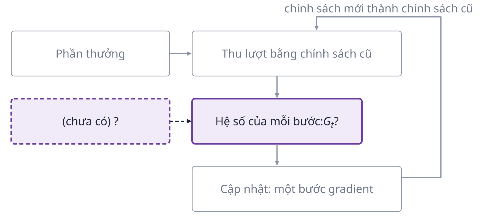
Ví dụ: chuỗi hai trạng thái (1)
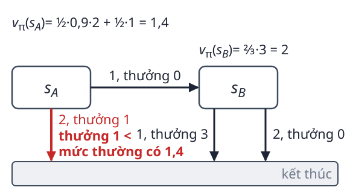
$p_A=\sigma(\theta_A)=\tfrac12$, $p_B=\sigma(\theta_B)=\tfrac23$, ${J=2{,}7p_Ap_B+1-p_A}$. Gradient theo $\theta_A$: $(2{,}7p_B-1)\,p_A(1-p_A)=0{,}8\cdot\tfrac14=0{,}2$.
Câu hỏi: Làm sao chỉ đẩy lên hành động tốt hơn mức thường có, mà giữ trung bình $0{,}2$?
| Hành động ở $s_A$, $s_B$ | Xác suất | $G_0$, $\gamma=0{,}9$ | $\psi_A$ | REINFORCE: $G_0\psi_A$ |
|---|---|---|---|---|
| $1,\ 1$ | $1/3$ | $0{,}9\cdot3=2{,}7$ | $+0{,}5$ | $2{,}7\cdot0{,}5=1{,}35$ |
| $1,\ 2$ | $1/6$ | $0$ | $+0{,}5$ | $0\cdot0{,}5=0$ |
| $2$ | $1/2$ | $1$ | $-0{,}5$ | $1\cdot(-0{,}5)=$${\color{#C62828}\mathbf{-0{,}5}}$ |
| trung bình; phương sai | $0{,}2$ (= gradient đúng); $0{,}69$ |
Trừ $v_\pi$ giữ trung bình, giảm dao động
Hệ số mới: lợi tức $G_t$ trừ đường cơ sở (baseline) $b(S_t)$, ở đây $b(S_t)=v_\pi(S_t)$.
| Hành động ở $s_A$, $s_B$ | Xác suất | $G_0$ | REINFORCE | trừ $v_\pi$: $(G_0-1{,}4)\psi_A$ |
|---|---|---|---|---|
| $1,\ 1$ | $1/3$ | $2{,}7$ | $1{,}35$ | $1{,}3\cdot0{,}5=0{,}65$ |
| $1,\ 2$ | $1/6$ | $0$ | $0$ | $-1{,}4\cdot0{,}5=-0{,}7$ |
| $2$ | $1/2$ | $1$ | $-0{,}5$ | $(-0{,}4)(-0{,}5)={\color{#2E7D4F}\boxed{0{,}2}}$ |
| trung bình; phương sai | $0{,}2$; $0{,}69$ | $0{,}2$; $0{,}20$ | ||
| xác suất tọa độ $\theta_A$ âm | $1/2$ | $1/6$ |
Trung bình vẫn $0{,}2$. Phương sai giảm từ $0{,}69$ xuống $0{,}20$.
Câu hỏi nhanh: trừ mức của hành động
Nhắc lại: $q_\pi(s_A,1)=0{,}9\cdot2=1{,}8$, $q_\pi(s_A,2)=1$. Tại $s_A$: $\psi_A=\pm0{,}5$.
| Hành động ở $s_A$, $s_B$ | Xác suất | $G_0$ | trừ $v_\pi$ | trừ $q_\pi(s_A,A_0)$ |
|---|---|---|---|---|
| $1,\ 1$ | $1/3$ | $2{,}7$ | $0{,}65$ | ${\color{#C62828}?}$$(2{,}7-1{,}8)\cdot0{,}5=0{,}45$ |
| $1,\ 2$ | $1/6$ | $0$ | $-0{,}7$ | ${\color{#C62828}?}$$(0-1{,}8)\cdot0{,}5=-0{,}9$ |
| $2$ | $1/2$ | $1$ | $0{,}2$ | ${\color{#C62828}?}$$(1-1)(-0{,}5)=0$ |
| trung bình | $0{,}2$ | ${\color{#C62828}?}$$\tfrac13\cdot0{,}45-\tfrac16\cdot0{,}9={\color{#C62828}0}$ |
Câu hỏi: Trừ $q_\pi(S_t,A_t)$ thay cho $v_\pi(S_t)$ có giữ trung bình $0{,}2$ không?
Lời giải: Không, trung bình thành $0$. Mức $q_\pi(S_t,A_t)$ phụ thuộc hành động vừa chọn.
Trừ một mức của trạng thái không đổi trung bình
Mệnh đề (đường cơ sở).
Giả thiết: $b$ chỉ phụ thuộc trạng thái, không phụ thuộc hành động đang chọn. Lượt do chính $\pi_\theta$ sinh ra.
Kết luận:
$$\mathbb E\Bigl[\sum_t\gamma^t\bigl(G_t-b(S_t)\bigr)\psi_t\Bigr]=\nabla J.$$Ý nghĩa: cột "trừ $v_\pi$" là trường hợp $b=v_\pi$. Cột "trừ $q_\pi$" vi phạm giả thiết thứ nhất.
Ý tưởng chứng minh: đường cơ sở
$$\sum_a\underbrace{\pi(a\mid s)\,\psi(s,a)}_{=\,\nabla_\theta\pi(a\mid s)}=\nabla_\theta\underbrace{\sum_a\pi(a\mid s)}_{=\,1}=0.$$Trên $s_A$: $\tfrac12\cdot0{,}5+\tfrac12\cdot(-0{,}5)=0$.
$b(s)$ không đổi theo hành động, nên ra ngoài tổng:
Hàm điểm có trung bình $0$ tại mỗi trạng thái, nên phần bị trừ có trung bình $0$.
Hệ số trung bình là lợi thế
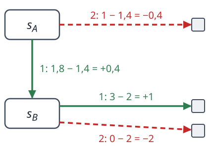
Định nghĩa. Lợi thế (advantage) của hành động $a$ tại $s$ đo hành động đó tốt hơn mức thường có bao nhiêu:
$$A_\pi(s,a)=q_\pi(s,a)-v_\pi(s).$$Hệ số $G_t-v_\pi(S_t)$ có trung bình $A_\pi(S_t,A_t)$, nên gradient chỉ cần lợi thế:
Còn thiếu: $q_\pi$ và $v_\pi$ chưa biết.
Critic đánh giá hành động ngay sau một bước
Nhắc lại: sai số TD
$$\delta_t=\underbrace{R_{t+1}+\gamma\,\hat v(S_{t+1})}_{\text{lợi tức một bước}}-\underbrace{\hat v(S_t)}_{\text{mức của trạng thái}}.$$Critic là hàm giá trị $\hat v$ dùng để đánh giá hành động qua trạng thái kế tiếp. Chính sách gọi là actor.
Khi $\hat v=v_\pi$, $\delta_t$ trung bình bằng lợi thế của hành động vừa chọn.
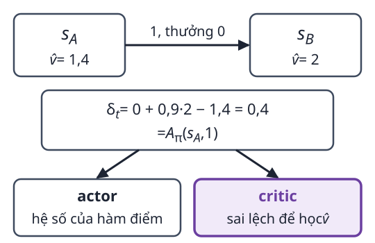
Với critic đúng, mọi lượt cho cùng tọa độ $0{,}2$
| Hành động ở $s_A$, $s_B$ | Xác suất | REINFORCE | trừ $v_\pi$ | $\delta_0\psi_A$, critic đúng |
|---|---|---|---|---|
| $1,\ 1$ | $1/3$ | $1{,}35$ | $0{,}65$ | $0{,}4\cdot0{,}5=0{,}2$ |
| $1,\ 2$ | $1/6$ | $0$ | $-0{,}7$ | $0{,}4\cdot0{,}5=0{,}2$ |
| $2$ | $1/2$ | $-0{,}5$ | $0{,}2$ | $(-0{,}4)(-0{,}5)=0{,}2$ |
Tọa độ $\theta_A$: trung bình $0{,}2$ ở cả ba cột. Phương sai $0{,}69$; $0{,}20$; $0$.
Còn thiếu: critic phải học từ dữ liệu, và critic học dở thì $\delta_t$ lệch.
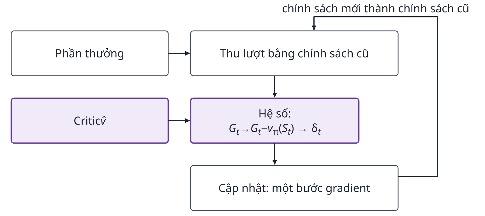
3.Trộn đánh giá một bước và cả lượt
Critic học dở thì đánh giá một bước bị lệch, còn lợi tức cả lượt thì dao động.
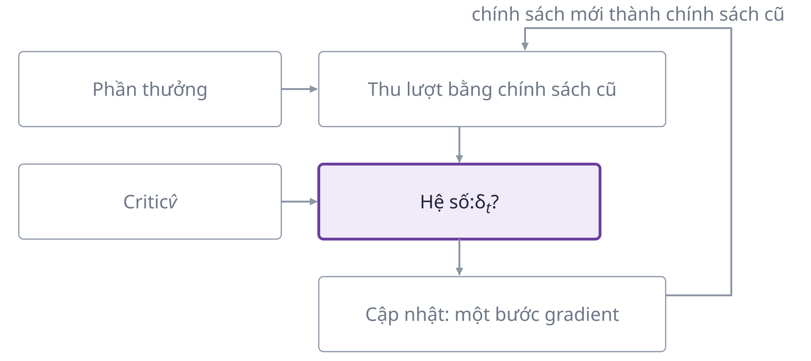
Một bước thì lệch, cả lượt thì dao động

Critic $\hat v=(1{,}4;\,1)$, giá trị thật $(1{,}4;\,2)$. Hai lượt cùng chọn 1 ở $s_A$, lợi thế đúng $0{,}4$.
Câu hỏi: Có cách nào ít lệch hơn một bước mà ít dao động hơn cả lượt không?
| Lượt | Xác suất | Một bước $\delta_0$ | Cả lượt $G_0-\hat v(s_A)$ |
|---|---|---|---|
| (i) $s_B$: 1, thưởng 3 | $2/3$ | $0+0{,}9\cdot1-1{,}4=-0{,}5$ | $0{,}9\cdot3-1{,}4=1{,}3$ |
| (ii) $s_B$: 2, thưởng 0 | $1/3$ | $-0{,}5$ | $0-1{,}4=-1{,}4$ |
| trung bình | ${\color{#B35C00}-0{,}5}$ | $(2\cdot1{,}3-1{,}4)/3=0{,}4$ | |
| lệch: sai dấu | dao động: cách nhau $2{,}7$ |
Ước lượng lợi thế tổng quát
Ước lượng lợi thế tổng quát (generalized advantage estimation, GAE) cộng các sai số TD phía sau với trọng số $(\gamma\lambda)^k$, tham số $\lambda\in[0;\,1]$:
$$\widehat A_t=\delta_t+\gamma\lambda\,\delta_{t+1}+(\gamma\lambda)^2\,\delta_{t+2}+\cdots={\color{#6B3FA0}\delta_t+\gamma\lambda\,\widehat A_{t+1}}.$$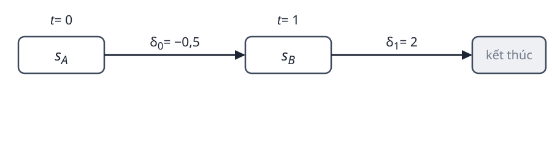

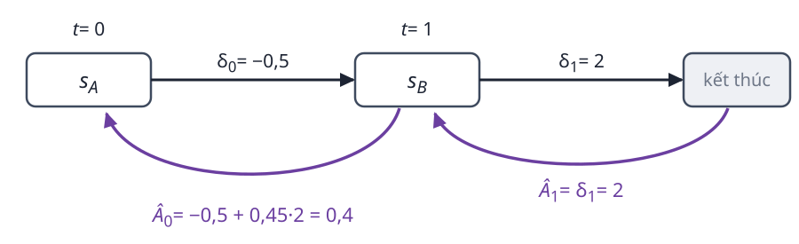
| một lượt (i) | $\lambda=0$, một bước | $\lambda=0{,}5$ | $\lambda=1$, cả lượt |
|---|---|---|---|
| $\widehat A_0$ | $-0{,}5$ | $-0{,}5+0{,}45\cdot2=0{,}4$ | $-0{,}5+0{,}9\cdot2=1{,}3$ |
$\lambda$ đổi độ lệch lấy dao động
| Lượt, xác suất | Một bước | $\lambda=0{,}5$ | Cả lượt |
|---|---|---|---|
| (i), $2/3$ | $-0{,}5$ | $0{,}4$ | $1{,}3$ |
| (ii), $1/3$ | $-0{,}5$ | $-0{,}5-0{,}45=-0{,}95$ | $-1{,}4$ |
| trung bình; khoảng cách hai lượt | ${\color{#B35C00}-0{,}5}$; $0$ | $-0{,}05$; $1{,}35$ | $0{,}4$; $2{,}7$ |
Với $\lambda=1$ trên lượt đầy đủ, hoặc khi critic đúng, GAE không làm lệch gradient.
Câu hỏi nhanh: $\lambda=0{,}8$ trên hai lượt
| Lượt | Xác suất | $\delta_0$ | $\delta_1$ | $\widehat A_0=\delta_0+0{,}72\,\delta_1$ |
|---|---|---|---|---|
| (i) | $2/3$ | $-0{,}5$ | $3-1=2$ | $-0{,}5+1{,}44=0{,}94$ |
| (ii) | $1/3$ | $-0{,}5$ | $0-1=-1$ | $-0{,}5-0{,}72=-1{,}22$ |
| trung bình | $(2\cdot0{,}94-1{,}22)/3=0{,}22$ |
Câu hỏi: Với $\lambda=0{,}8$ ($\gamma\lambda=0{,}72$), hai lượt cách nhau bao nhiêu? Trung bình lệch về phía nào so với lợi thế đúng $0{,}4$?
Lời giải: Hai lượt cách nhau $2{,}16$, gần $2{,}7$ của cả lượt. Trung bình $0{,}22$, lệch $-0{,}18$, ít hơn $-0{,}9$ của một bước.
Còn thiếu: bước dài vẫn có thể làm $J$ giảm.
4.Đánh giá chính sách mới bằng dữ liệu cũ
Bước lớn chỉ an toàn khi đánh giá được chính sách mới trước khi chạy nó.

Bước lớn đổi cả nơi chính sách tới
Lượt của chính sách cũ $(\tfrac12;\,\tfrac23)$ tới $s_B$ ở một nửa số lần. Chính sách mới $\pi'$ với $p'_A=1$, $p'_B=0{,}5$ tới $s_B$ ở mọi lượt.
Câu hỏi: Đoán $J$ của chính sách mới từ lượt của chính sách cũ thế nào? Phép đoán đó tin được đến đâu?

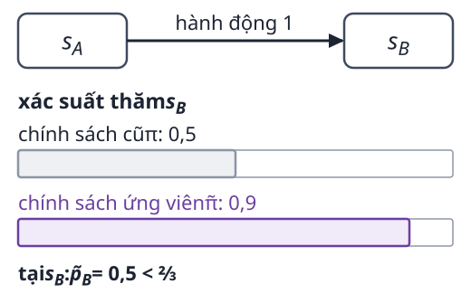
Chính sách mới tới $s_B$ gấp đôi, và ở $s_B$ nó chọn hành động tốt ít hơn chính sách cũ ($0{,}5<2/3$).
Hiệu $J$ tính theo nơi chính sách mới tới
Lợi thế cũ chọn theo $\pi'$: $A_\pi(s,\pi')=\sum_a\pi'(a\mid s)\,A_\pi(s,a)$.
$$J(\pi')-J(\pi)=\sum_s\underbrace{\textstyle\sum_t\gamma^t\Pr_{\pi'}(S_t=s)}_{\text{số lần }\pi'\text{ tới }s}\cdot A_\pi(s,\pi').$$Nhắc lại: lợi thế cũ $(0{,}4;\,-0{,}4)$ ở $s_A$, $(1;\,-2)$ ở $s_B$; $J=2{,}7\,p_Ap_B+1-p_A$.
| Trạng thái | $A_\pi(s,\pi')$ | số lần $\pi'$ tới | tích |
|---|---|---|---|
| $s_A$ | $1\cdot0{,}4+0\cdot(-0{,}4)=0{,}4$ | $1$ | $0{,}4$ |
| $s_B$ | $0{,}5\cdot1+0{,}5\cdot(-2)=-0{,}5$ | $0{,}9\cdot1=0{,}9$ | $-0{,}45$ |
| kiểm: $J(\pi')-J(\pi)=2{,}7\cdot0{,}5-1{,}4$ | tổng | $\boxed{-0{,}05}$ | |
Công thức đúng, nhưng cột "số lần $\pi'$ tới" cần lượt của $\pi'$.
Hàm thay thế dùng nơi chính sách cũ tới
Hàm thay thế $\mathcal L$ giữ số lần tới của chính sách cũ, nên tính được từ lượt cũ:
| Trạng thái | $A_\pi(s,\pi')$ | số lần $\pi'$ tới | số lần $\pi$ tới | tích với số lần $\pi$ |
|---|---|---|---|---|
| $s_A$ | $0{,}4$ | $1$ | $1$ | $0{,}4$ |
| $s_B$ | $-0{,}5$ | $0{,}9$ | ${\color{#6B3FA0}0{,}9\cdot0{,}5=0{,}45}$ | $-0{,}225$ |
| tổng | thật: $-0{,}05$ | hàm thay thế: ${\color{#B35C00}\boxed{+0{,}175}}$ |
Hàm thay thế báo tăng $0{,}175$, còn $J$ thật giảm $0{,}05$.
Hàm thay thế tính từ hành động của chính sách cũ
Lượt cũ chỉ chứa hành động của chính sách cũ $\pi_{\mathrm{old}}=\pi$. Tỉ số chính sách (probability ratio) $\rho=\pi'(a\mid s)/\pi_{\mathrm{old}}(a\mid s)$ đổi trung bình theo $\pi'$ thành trung bình theo $\pi_{\mathrm{old}}$:
$$A_\pi(s,\pi')=\sum_a\pi'(a\mid s)\,A_\pi(s,a)=\mathbb E_{a\sim\pi_{\mathrm{old}}}\bigl[\rho\,A_\pi(s,a)\bigr].$$| $s_B$, hành động | $\pi_{\mathrm{old}}$ | $\pi'$ | $\rho$ | $A_\pi$ | $\rho\,A_\pi$ |
|---|---|---|---|---|---|
| 1 | $2/3$ | $0{,}5$ | $0{,}75$ | $1$ | $0{,}75$ |
| 2 | $1/3$ | $0{,}5$ | $1{,}5$ | $-2$ | $-3$ |
| trung bình theo $\pi_{\mathrm{old}}$ | $\tfrac23\cdot0{,}75+\tfrac13\cdot(-3)=\boxed{-0{,}5}$ |
Trung bình $\rho\,A_\pi$ trên lượt cũ cho hàm thay thế, không cần chạy $\pi'$.
Hàm thay thế tiếp xúc $J$ tại chính sách cũ
Trên đường $p_A=\tfrac{1+t}2$, $p_B=\tfrac{4-t}6$, thay vào $J$: $\Delta J=0{,}175t-0{,}225t^2$.


Tại chính sách cũ, hàm thay thế bằng $J$ và có cùng độ dốc.
Bước gần thì hàm thay thế sai ít
Khai triển $J=2{,}7p_Ap_B+1-p_A$ quanh $(\tfrac12;\,\tfrac23)$, với $\Delta p_A=p'_A-\tfrac12$ và $\Delta p_B=p'_B-\tfrac23$:
$$\Delta J=\underbrace{0{,}8\,\Delta p_A+1{,}35\,\Delta p_B}_{\Delta\mathcal L}+\underbrace{{\color{#C62828}2{,}7\,\Delta p_A\,\Delta p_B}}_{\text{sai số}}.$$Hai số hạng của $\Delta\mathcal L$: $A_\pi(s_A,\pi')=0{,}8\,\Delta p_A$ nhân $1$ lần $\pi$ tới $s_A$, và $A_\pi(s_B,\pi')=3\,\Delta p_B$ nhân $0{,}45$ lần $\pi$ tới $s_B$.
| Bước | $(\Delta p_A;\,\Delta p_B)$ | $\Delta\mathcal L$ | sai số | $\Delta J$ |
|---|---|---|---|---|
| $(1;\,0{,}5)$ | $(0{,}5;\,-1/6)$ | $0{,}175$ | $2{,}7\cdot0{,}5\cdot(-1/6)=-0{,}225$ | $-0{,}05$ |
Sai số là tích hai mức đổi $\Delta p_A\,\Delta p_B$. Bước ngắn thì cả hai nhỏ, và sai số nhỏ cỡ bậc hai.
Câu hỏi nhanh: bước gần $(0{,}6;\,0{,}7)$
$$\Delta J=\underbrace{0{,}8\,\Delta p_A+1{,}35\,\Delta p_B}_{\Delta\mathcal L}+{\color{#C62828}2{,}7\,\Delta p_A\,\Delta p_B}.$$| Bước | $(\Delta p_A;\,\Delta p_B)$ | $\Delta\mathcal L$ | sai số | $\Delta J$ |
|---|---|---|---|---|
| $(1;\,0{,}5)$ | $(0{,}5;\,-1/6)$ | $0{,}175$ | $-0{,}225$ | $-0{,}05$ |
| $(0{,}6;\,0{,}7)$ | $(0{,}1;\,1/30)$ | ${\color{#C62828}?}$$0{,}125$ | ${\color{#C62828}?}$$2{,}7\cdot0{,}1/30=0{,}009$ | ${\color{#C62828}?}$$0{,}134$ |
Câu hỏi: Bước $(0{,}6;\,0{,}7)$ ở gần chính sách cũ. Hàm thay thế đoán $\Delta J$ bao nhiêu, và sai bao nhiêu?
Còn thiếu: chưa biết bước phải gần đến mức nào.
Lời giải: Đoán $0{,}8\cdot0{,}1+1{,}35/30=0{,}125$, sai $0{,}009$, nhỏ hơn $25$ lần sai số $0{,}225$ của bước $(1;\,0{,}5)$.
Sai số của hàm thay thế bị chặn theo khoảng cách
Định lý (chặn cải thiện).
Giả thiết: lợi thế và số lần tới của chính sách cũ được tính chính xác, $\gamma<1$.
Kết luận: $J(\pi')-J(\pi)$ không nhỏ hơn mức tăng hàm thay thế đoán trừ một phạt. Phạt tỉ lệ với khoảng cách trung bình theo nơi chính sách cũ tới, với thừa số ${1/(1-\gamma)^2=100}$ khi $\gamma=0{,}9$.
Khoảng cách tại $s$: $\tfrac12\sum_a\bigl|\pi'(a\mid s)-\pi(a\mid s)\bigr|$.
Với thừa số $100$, phạt vượt mức đoán, trừ khi bước rất ngắn.
KL đo khoảng cách bằng lượt cũ
Phân kỳ Kullback–Leibler (Kullback–Leibler divergence, KL) tại $s$, từ chính sách cũ $\pi$ tới chính sách mới $\pi'$:
$$D_{\mathrm{KL}}(s)=\sum_a\pi(a\mid s)\log\frac{\pi(a\mid s)}{\pi'(a\mid s)}=\mathbb E_{a\sim\pi}\bigl[-\log\rho\bigr].$$KL tính được từ lượt cũ. Khoảng cách của định lý không vượt $\sqrt{D_{\mathrm{KL}}/2}$.
Bước $(1;\,0{,}5)$ tại $s_A$: $D_{\mathrm{KL}}(s_A)=\tfrac12\log\dfrac{1/2}{1}+\tfrac12\log\dfrac{1/2}{\color{#C62828}0}=+\infty$.
Chính sách mới bỏ hẳn hành động 2, nên KL tại $s_A$ vô hạn, dù khoảng cách ở đó chỉ là $0{,}5$.
Miền tin cậy: tối đa hàm thay thế khi KL nhỏ
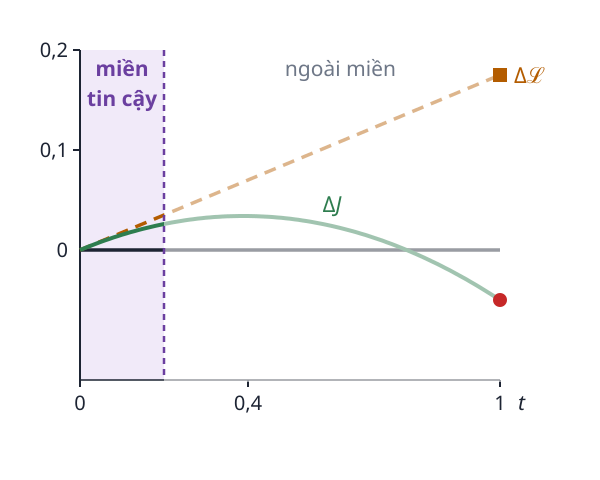

Miền tin cậy: tối đa hàm thay thế trên các chính sách có KL trung bình, theo nơi chính sách cũ tới, không vượt bán kính $\kappa$:
Ràng buộc KL loại bước $(1;\,0{,}5)$, và cho phép bước dài hơn bước mà cận dưới chứng nhận.
Gradient tự nhiên dồn bước về $\theta_B$
Gradient thường, hệ số của $\Delta\mathcal L$ nhân $p(1-p)$: $g=(0{,}8\cdot\tfrac14;\,1{,}35\cdot\tfrac29)=(0{,}2;\,0{,}3)$.
Độ cong của KL theo $\theta_s$: $F_s$ bằng ${1-\gamma=0{,}1}$ nhân số lần tới $s$, nhân $p_s(1-p_s)$:
$F_A=0{,}1\cdot\tfrac14=0{,}025$,
$F_B=0{,}045\cdot\tfrac29=0{,}01$.

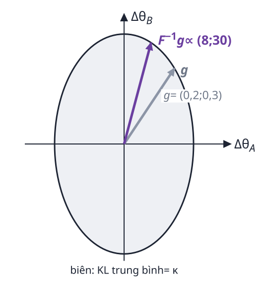
Gần chính sách cũ, bước tốt nhất trong miền KL đi theo gradient tự nhiên $(0{,}2/0{,}025;\,0{,}3/0{,}01)=(8;\,30)$, dồn về $\theta_B$.
TRPO: một bước gần đúng, kiểm lại trên dữ liệu
Tối ưu chính sách miền tin cậy (trust region policy optimization, TRPO) ghép hàm thay thế, ràng buộc KL và gradient tự nhiên thành vòng trong của khối cập nhật:
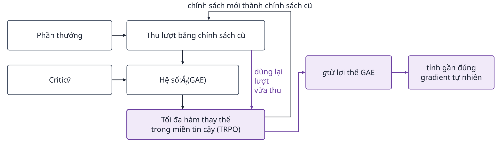
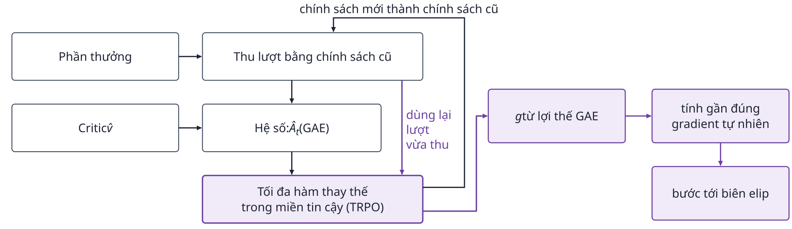
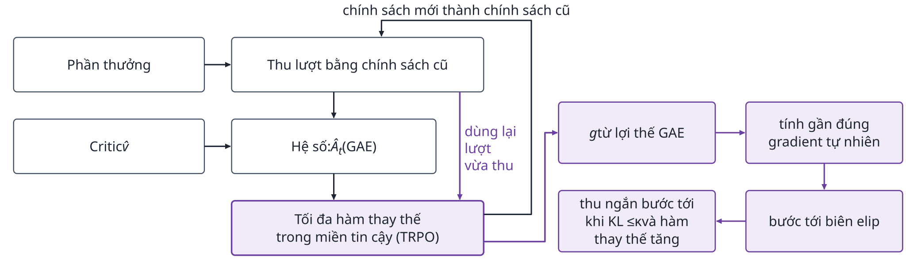
TRPO trong thực hành dùng ước lượng và nghiệm gần đúng, nên không bảo đảm $J$ tăng.
Còn thiếu: với mạng lớn, mỗi bước TRPO tốn hơn hẳn một bước gradient.
5.Giữ chính sách mới gần chính sách cũ
Chỉ chạy Adam trên lượt cũ mà chính sách mới vẫn ở gần chính sách cũ.
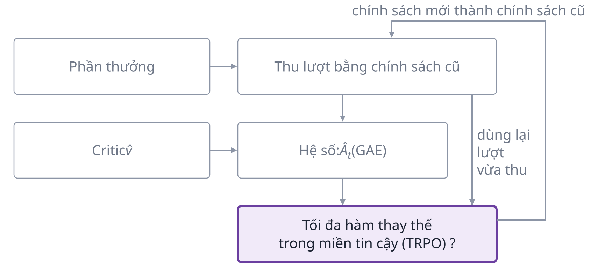
Bộ đệm hai lượt đẩy chính sách đi xa và sai hướng
Bỏ ràng buộc KL, chỉ chạy Adam trên bộ đệm $s_A\xrightarrow1s_B\xrightarrow2$, $s_A\xrightarrow2$.
Lợi thế ước lượng: GAE với $\lambda=1$, critic $(1{,}4;\,1)$.
| Mẫu | $\widehat A$ ước lượng | lợi thế đúng | $\rho$ | $\rho\,\widehat A$ |
|---|---|---|---|---|
| $s_A$, hành động 1 | $0-1{,}4={\color{#C62828}-1{,}4}$ | ${\color{#2E7D4F}+0{,}4}$ | $2p'_A$ | $-2{,}8p'_A$ |
| $s_A$, hành động 2 | $1-1{,}4=-0{,}4$ | $-0{,}4$ | $2-2p'_A$ | $-0{,}8+0{,}8p'_A$ |
| $s_B$, hành động 2 | $0-1=-1$ | $-2$ | $3(1-p'_B)$ | $-3(1-p'_B)$ |
Hàm thay thế mẫu, trung bình $\rho\,\widehat A$: $-0{,}4-p'_A$ ở $s_A$, $-3(1-p'_B)$ ở $s_B$.
Tối đa ở $(p'_A;\,p'_B)=(0;\,1)$: $J$ giảm $0{,}4$.
Câu hỏi: Sửa mục tiêu thế nào để không đi quá xa?
Mục tiêu cắt không cho lợi khi đi quá xa
Mục tiêu cắt (clipped objective) kẹp $\rho$ vào $[1-\epsilon;\,1+\epsilon]$ rồi lấy số nhỏ hơn:
$$\ell^{\mathrm{CLIP}}=\min\Bigl(\rho\,\widehat A,\ \operatorname{clip}(\rho,1-\epsilon,1+\epsilon)\,\widehat A\Bigr),\quad\epsilon=0{,}2.$$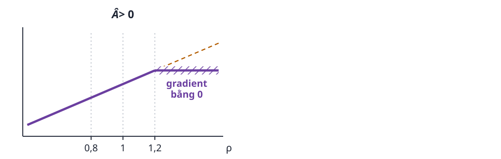
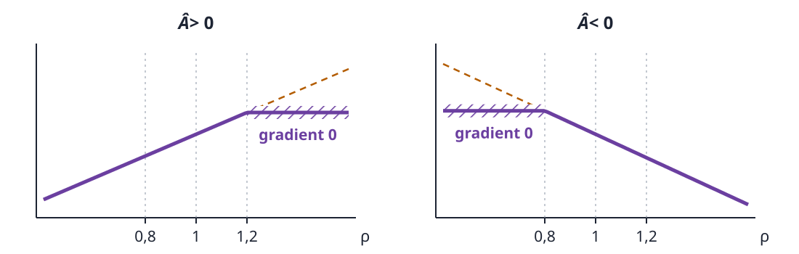
$\widehat A>0$: không thưởng thêm khi $\rho>1{,}2$.
$\widehat A<0$: không thưởng thêm khi $\rho<0{,}8$.
Phía bất lợi không bị cắt, gradient kéo về.
Câu hỏi nhanh: mẫu lợi thế âm với $\rho=1{,}3$
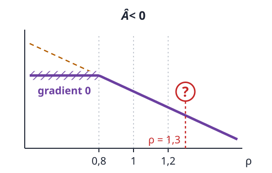

Câu hỏi: Tại $s_B$, mẫu chọn hành động 2 (lợi thế $-2$) có $\rho=1{,}3$, tức $p_B$ đã giảm còn $0{,}57$. Với $\epsilon=0{,}2$, mẫu có bị cắt không?
Lời giải: Không. $\min(-2\cdot1{,}3;\,-2\cdot1{,}2)=-2{,}6$ giữ nhánh không cắt, nên gradient khác $0$ kéo $p_B$ trở lại.
Trên $s_B$, mục tiêu cắt nằm ngang từ $p=0{,}8$
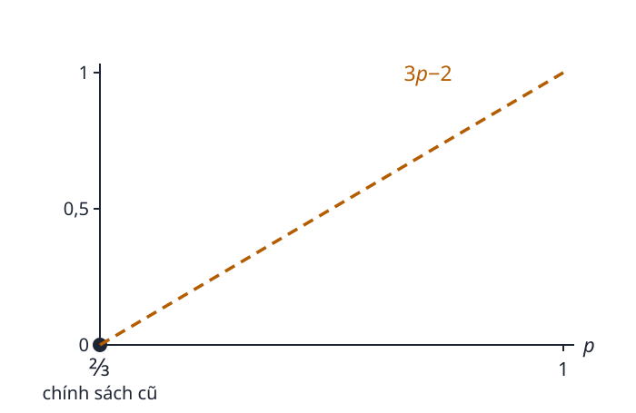
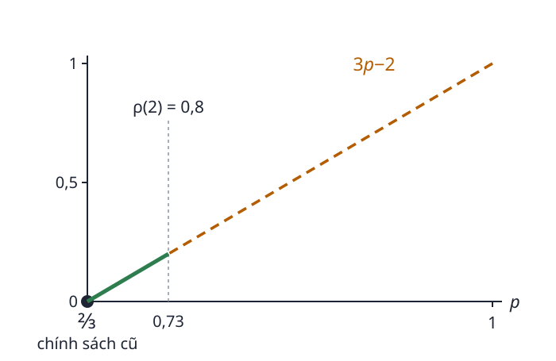
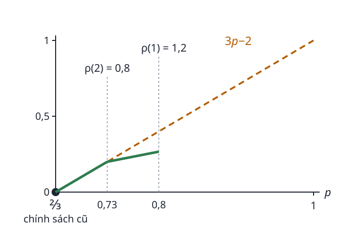
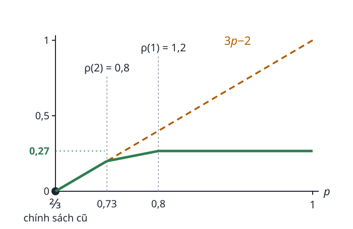
Xét riêng $s_B$: chính sách cũ $p_B=\tfrac23$, $p$ là $p_B$ mới. Ba mẫu đúng tần suất, hành động $1,1,2$, lợi thế $1,1,-2$. Hàm thay thế mẫu:
$\tfrac13\bigl[2\cdot1{,}5p-6(1-p)\bigr]=3p-2$.
$\rho(2)=3(1-p)$ chạm $0{,}8$ tại ${p\approx0{,}73}$.
$\rho(1)=1{,}5p$ chạm $1{,}2$ tại $p=0{,}8$.
Mục tiêu cắt nằm ngang từ $p=0{,}8$. Ở đây hàm thay thế mẫu không sai, nên phép cắt dừng cả một bước tốt.
Có cắt thì $J$ gần như không đổi
Bộ đệm hai lượt $s_A\xrightarrow1s_B\xrightarrow2$ và $s_A\xrightarrow2$, $\epsilon=0{,}2$.
| Trạng thái | Không cắt, dừng ở | Có cắt, dừng ở | Mốc |
|---|---|---|---|
| $s_A$ | $p_A=0$ | $p_A=0{,}4$ | $\rho(1)=2p_A$ chạm $0{,}8$ |
| $s_B$ | $p_B=1$ | $p_B\approx0{,}73$ | $\rho(2)=3(1-p_B)$ chạm $0{,}8$ |
| $J$ thật | $1$ (giảm $0{,}4$) | $2{,}7\cdot0{,}4\cdot\tfrac{11}{15}+0{,}6=1{,}392$ (giảm $0{,}008$) | |
Phép cắt không sửa được lợi thế sai, nhưng giới hạn mỗi vòng đi bao xa.
Còn thiếu: gradient bằng $0$ chưa chắc giữ tham số đứng yên.
Phép cắt không chặn KL
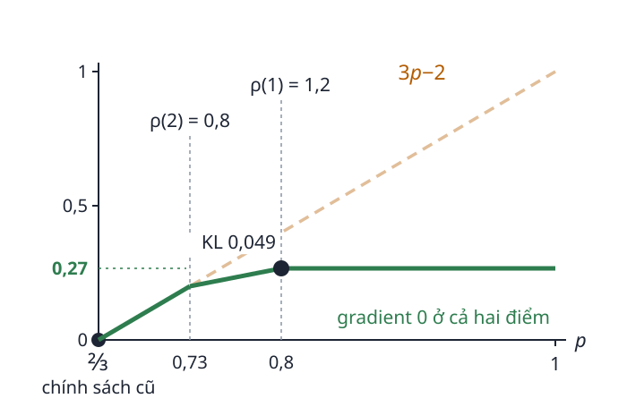
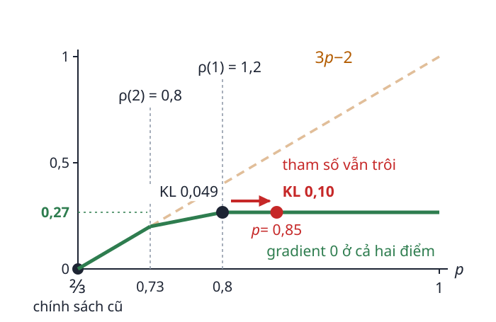
KL từ chính sách cũ tại $s_B$:
$$\tfrac23\log\frac{2/3}{p}+\tfrac13\log\frac{1/3}{1-p}.$$Quán tính của Adam và các lô nhỏ khác vẫn đẩy tham số vào đoạn phẳng, chẳng hạn tới $p=0{,}85$.
Nhiều cài đặt PPO còn đo KL ước lượng trên bộ đệm (approxKL) và, tùy chọn, dừng sớm khi nó vượt ngưỡng.
Một vòng PPO dùng mỗi bộ đệm nhiều lần
Tối ưu chính sách gần kề (proximal policy optimization, PPO; ở đây là bản PPO-Clip) thay khối cập nhật bằng vòng trong sau:
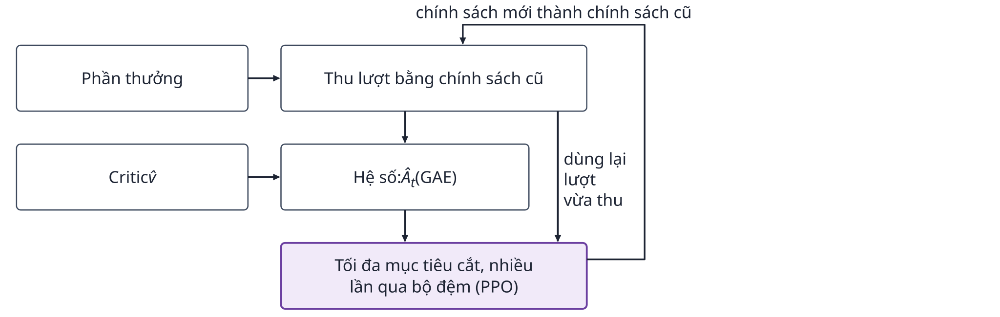
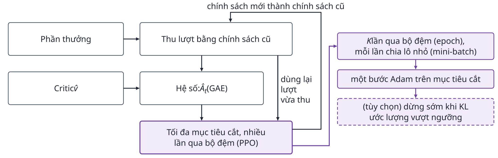
Bộ đệm chỉ chứa lượt của $\pi_{\mathrm{old}}$ vừa thu, và bị bỏ sau $K$ lần qua.
Critic hồi quy về $\widehat A_t+\hat v_{\mathrm{old}}(S_t)$, giữ cố định trong $K$ lần qua.
TRPO và PPO cùng giữ bước gần, khác cách giữ
| TRPO | PPO | |
|---|---|---|
| Giữ gần bằng | ràng buộc KL trung bình, thu ngắn bước | cắt tỉ số trong mục tiêu; tùy chọn dừng sớm theo KL ước lượng |
| Mỗi bộ đệm cho | một bước, tính gần đúng gradient tự nhiên | $K$ lần qua bộ đệm, mỗi lô nhỏ một bước Adam |
| Bảo đảm $J$ tăng | không, trong thực hành | không |
Còn thiếu: cả hai cần một hàm phần thưởng.
6.Học từ so sánh của người
Không có phần thưởng, chỉ có người chọn câu trả lời tốt hơn.
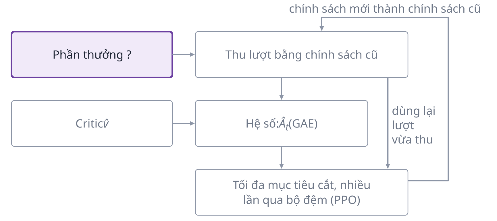
Một lời nhắc, hai câu trả lời, sáu lần chọn
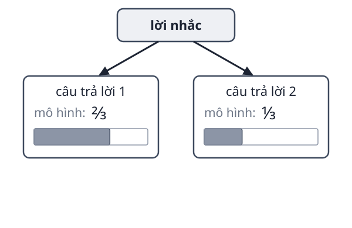
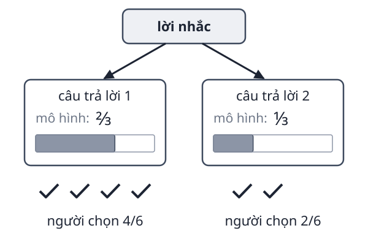
Một mô hình ngôn ngữ nhận một lời nhắc (prompt) và đáp bằng câu trả lời (response) 1 hay 2, với xác suất $\tfrac23$ và $\tfrac13$.
Không có hàm phần thưởng.
Sáu lần, người đọc hai câu và chọn câu tốt hơn. Tỉ lệ người chọn câu 1 là $\tfrac46$.
Câu hỏi: Mô hình mới nên chọn mỗi câu với xác suất bao nhiêu? Có cần một vòng học tăng cường để tìm nó không?
Khớp phần thưởng với tỉ lệ người chọn $\tfrac46$
Mô hình Bradley–Terry: người chọn câu có phần thưởng cao hơn thường xuyên hơn, và chỉ hiệu phần thưởng có vai trò. Với hai câu trả lời $y_1$, $y_2$, xác suất người chọn $y_1$ là
$$\sigma\bigl(\hat r(y_1)-\hat r(y_2)\bigr),\quad\sigma(z)=\frac1{1+e^{-z}}.$$Khớp mô hình phần thưởng $\hat r$ bằng hợp lý cực đại: $\sigma(\Delta\hat r)$ bằng tỉ lệ người chọn $\tfrac46$, tức $\Delta\hat r=\log2$. Chọn $\hat r(y_2)=0$:
$\hat r=(\log2;\,0)$.
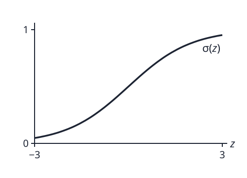
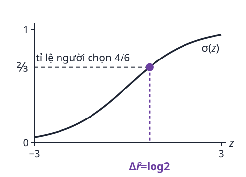
Phạt KL chọn một điểm giữa tham lam và $\pi_{\mathrm{ref}}$
Số hạng sau là KL tới chính sách tham chiếu $\pi_{\mathrm{ref}}=(\tfrac23;\,\tfrac13)$, tức mô hình ban đầu, giữ cố định.
Chính sách tham lam $(1;\,0)$ chỉ theo phần thưởng, bỏ hẳn $y_2$ và trả KL $\log1{,}5=0{,}405$.
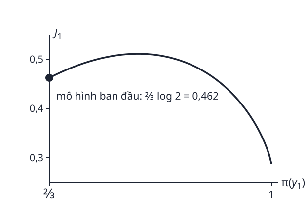
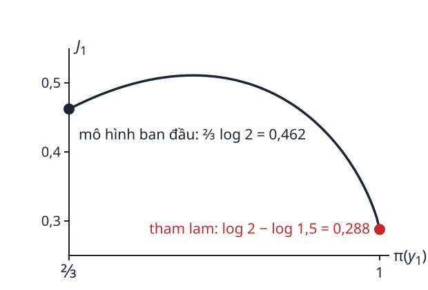
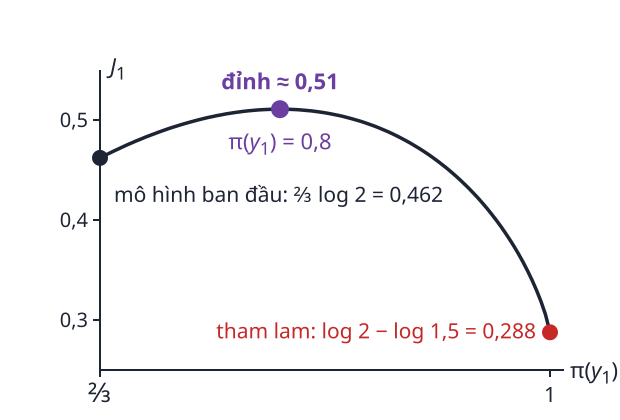
Với $\beta=1$ và $p=\pi(y_1)$: $J_1(p)=p\log2-p\log\dfrac{p}{2/3}-(1-p)\log\dfrac{1-p}{1/3}$.
Nghiệm có phạt KL: $\pi^*\propto\pi_{\mathrm{ref}}\,e^{\hat r/\beta}$
Định lý (nghiệm có phạt KL). Giả thiết: $\beta>0$. Chính sách được chọn tự do cho mỗi lời nhắc.
Kết luận: $J_\beta$ lớn nhất tại
$$\pi^*(y)=\frac{\pi_{\mathrm{ref}}(y)\,e^{\hat r(y)/\beta}}{\mathcal Z},$$với $\mathcal Z=\sum_y\pi_{\mathrm{ref}}(y)\,e^{\hat r(y)/\beta}$.
Với $\beta=1$: $\pi_{\mathrm{ref}}e^{\hat r}=(\tfrac43;\,\tfrac13)$, $\mathcal Z=\tfrac53$, $\pi^*=(\tfrac45;\,\tfrac15)$.
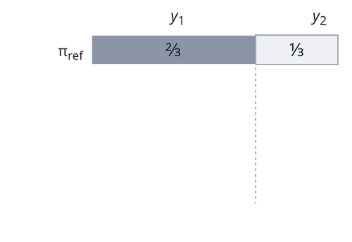
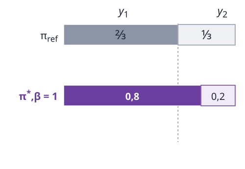
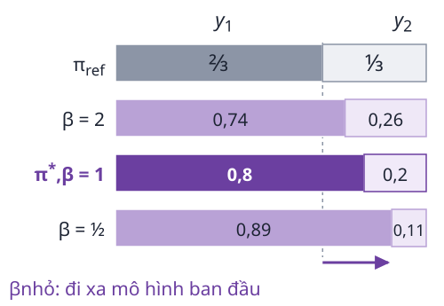
Còn thiếu: tìm $\pi^*$ mà không tính $\mathcal Z$, một tổng trên mọi câu trả lời.
RLHF tìm $\pi^*$ bằng PPO trên phần thưởng đã trừ KL
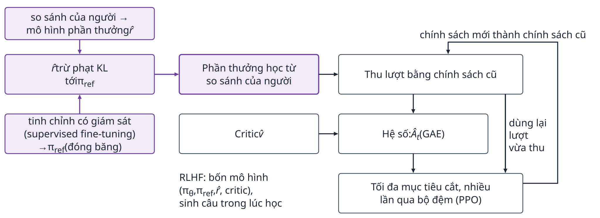
Học tăng cường từ phản hồi con người (RLHF) tìm $\pi^*$ bằng PPO trên mẫu câu, không cần $\mathcal Z$, với $\tilde r(y)=\hat r(y)-\beta\log\bigl(\pi_{\mathrm{old}}(y)/\pi_{\mathrm{ref}}(y)\bigr)$.
Tại $\pi_{\mathrm{old}}=\pi^*$, $\beta=1$: $\tilde r(y_1)=\log\tfrac{2}{1{,}2}=\log\tfrac{1}{0{,}6}=\tilde r(y_2)$, nên PPO đứng yên.
Đổi biến: phần thưởng viết theo chính sách
Nhắc lại: nghiệm có phạt KL của phần thưởng $r$ là $\pi^*=\pi_{\mathrm{ref}}\,e^{r/\beta}/\mathcal Z$.
Lấy log hai vế và đổi chiều:
Trên ví dụ, $r=\hat r$, $\beta=1$: $\log1{,}2+\log\tfrac53=0{,}18+0{,}51=0{,}69=\hat r(y_1)$. Hiệu hai câu: $\log1{,}2-\log0{,}6=\log2$, không chứa $\mathcal Z$.
Trong phép so sánh hai câu, $\beta\log\mathcal Z$ triệt tiêu.
DPO học thẳng chính sách bằng hồi quy logistic
Tối ưu ưu tiên trực tiếp (direct preference optimization, DPO) thay $\hat r=\beta\log(\pi_\theta/\pi_{\mathrm{ref}})$ vào mất mát Bradley–Terry, trên $N$ lần so sánh:
$$L^{\mathrm{DPO}}=-\frac1N\sum\log\sigma\Bigl(\underbrace{\beta\log\frac{\pi_\theta(y_w)}{\pi_{\mathrm{ref}}(y_w)}}_{\text{câu được chọn}}-\underbrace{\beta\log\frac{\pi_\theta(y_l)}{\pi_{\mathrm{ref}}(y_l)}}_{\text{câu bị loại}}\Bigr).$$Cực tiểu khi $\sigma(\cdot)$ bằng tỉ lệ người chọn $\tfrac46$, tức $\tfrac{p}{2/3}\big/\tfrac{1-p}{1/3}=2$. Với $p=\pi_\theta(y_1)$, nghiệm là $p=0{,}8=\pi^*(y_1)$.
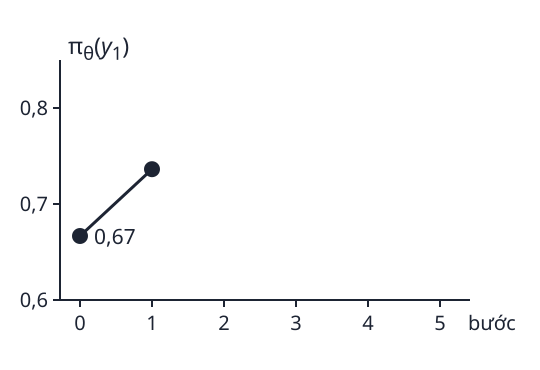
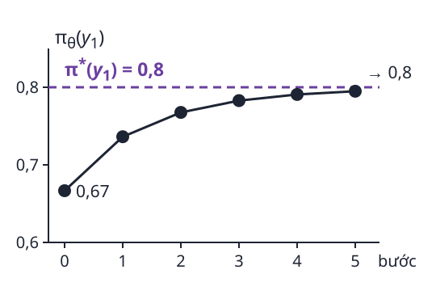
Hai con đường có cùng nghiệm $(\tfrac45;\,\tfrac15)$
Với Bradley–Terry, $\pi_{\mathrm{ref}}$ cố định, dương và chính sách chọn tự do, hai mục tiêu có cùng nghiệm $\pi^*$. PPO không chắc hội tụ tới đó.
Câu hỏi nhanh: người luôn chọn một phía
Câu hỏi: Nếu cả sáu lần người đều chọn $y_1$, $\hat r$ và $\pi^*$ ra sao?
Lời giải: Hiệu $\hat r(y_1)-\hat r(y_2)$ tăng vô hạn, nên $\pi^*\to(1;\,0)$ với mọi $\beta$. DPO cũng đẩy $\pi_\theta(y_2)$ về $0$.
Nghiệm hữu hạn chung cần thêm điều kiện: mỗi cặp câu được chọn theo cả hai chiều ít nhất một lần.
DPO chỉ học trên các câu có trong dữ liệu. RLHF chấm cả câu mới bằng $\hat r$, có thể sai.
7.Tổng kết
Ba khối đã sửa của vòng cập nhật gom lại các câu trả lời của bài.
Vòng cập nhật chính sách sau năm mạch
Vấn đề trung tâm
- Trừ một mức chỉ phụ thuộc trạng thái giữ trung bình của gradient. Trừ $v_\pi$ hạ phương sai từ $0{,}69$ xuống $0{,}20$, mức khác có thể làm nó tăng.
- Critic một bước và GAE, trộn với cả lượt bằng $\lambda$, giảm thêm dao động, nhưng lệch khi critic sai và $\lambda<1$.
- Gần chính sách cũ, hàm thay thế sai ít, cỡ bậc hai. TRPO và PPO giữ bước gần, không bảo đảm $J$ tăng.
- Với Bradley–Terry, $\pi_{\mathrm{ref}}$ cố định, dương trên mọi câu, chính sách chọn tự do, RLHF và DPO cùng nghiệm $\pi^*$. DPO không cần vòng học tăng cường.
Bài tập: một vòng PPO-Clip trên chuỗi (1)
Chuỗi hai trạng thái, chính sách cũ $(\tfrac12;\,\tfrac23)$, lợi thế đúng ghi trên các cung, $\epsilon=0{,}2$. Các mẫu có đúng tần suất của chính sách cũ.
Câu hỏi: Một vòng PPO-Clip tăng mục tiêu cắt tới đầu đoạn phẳng. (a) Vòng dừng ở chính sách nào? (b) Hàm thay thế đoán $J$ tăng bao nhiêu, và $J$ thật tăng bao nhiêu?
Bài tập: một vòng PPO-Clip trên chuỗi (2)
Lời giải:
| $s_A$ | $s_B$ | |
|---|---|---|
| Tỉ số | $\rho(1)=2p_A$, $\rho(2)=2-2p_A$ | $\rho(1)=1{,}5p_B$, $\rho(2)=3-3p_B$ |
| Mốc cắt | cả hai chạm biên tại $p_A=0{,}6$ | $0{,}73$ rồi $0{,}8$, như mạch 5 |
| Dừng ở | $p_A=0{,}6$ | $p_B=0{,}8$ |
(b) Hàm thay thế: $0{,}8\cdot0{,}1+1{,}35\cdot\tfrac2{15}=0{,}08+0{,}18=0{,}26$.
$J$ thật: $2{,}7\cdot0{,}6\cdot0{,}8+0{,}4=1{,}696$, tăng $0{,}296$.
Kết luận: hàm thay thế đoán thấp $2{,}7\cdot0{,}1\cdot\tfrac2{15}=0{,}036$, vì chính sách mới tới $s_B$ nhiều hơn và tốt hơn ở đó.
Câu hỏi tự kiểm tra
Câu hỏi: trả lời bằng phép tính trên các ví dụ của bài.
- Bước $(0{,}5;\,1)$ chỉ đổi $p_B$. Vì sao hàm thay thế đoán đúng $\Delta J$, dù bước xa?
- Trên $s_B$ với $\epsilon=0{,}1$, mục tiêu cắt hết tăng từ $p$ nào?
- Với $\beta=4$ thay cho $1$, $\pi^*$ bằng bao nhiêu? Vì sao nó gần $\pi_{\mathrm{ref}}$ hơn?
Bài tập về nhà
| Mạch | Bài tập |
|---|---|
| 2. So lợi tức với giá trị của trạng thái | 10.14; ghi chú: 10.1, 10.4, 10.5, 10.10 |
| 3. Trộn đánh giá một bước và cả lượt | 10.13, 10.15; ghi chú: 10.6, 10.7 |
| 4. Đánh giá chính sách mới bằng dữ liệu cũ | 10.16, 10.17; ghi chú: 10.8, 10.9, 10.11 |
| 5. Giữ chính sách mới gần chính sách cũ | 10.14; ghi chú: 10.2, 10.12 |
| 6. Học từ so sánh của người | 10.22; ghi chú: 10.18–10.21 |
| 7. Tổng kết | ghi chú: 10.3, 10.23 |
Tài liệu tham khảo
- Sutton, R. S., Barto, A. G. Reinforcement Learning: An Introduction, ấn bản 2, 2018, §7.1, §12.1–12.3, §13.4–13.5.
- Kakade, Langford, 2002; Achiam và cộng sự. Constrained Policy Optimization, 2017.
- Schulman và cộng sự. Trust Region Policy Optimization, 2015; Generalized Advantage Estimation, 2016; Proximal Policy Optimization Algorithms, 2017.
- Christiano và cộng sự, 2017; Ouyang và cộng sự, 2022: học tăng cường từ phản hồi con người.
- Rafailov và cộng sự. Direct Preference Optimization, 2023.
- Tạ Việt Cường. Bài giảng 10, học phần AIT3007, 2025–2026.
Bài tiếp theo: Bài 11, Lập kế hoạch dựa trên mô hình.